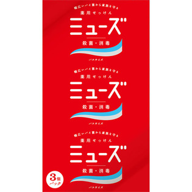
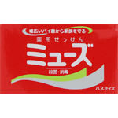
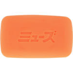

返回列表
产品名称：ミューズ 固形せっけん オリジナル バスサイズ

レキットベンキーザー・ジャパン ミューズ 固形せっけん オリジナル バスサイズ １３５ｇ×３（医薬部外品）
メーカー レキットベンキーザー・ジャパン
JANコード 4906156800029
商品の特徴
植物由来の洗浄成分が幅広いバイ菌を殺菌・消毒し、手肌を清潔に保ちます。
普段の手洗いはもちろん、毎日のお風呂にもおすすめです。体臭や汗臭の元となる原因菌を殺菌し、デオドラント効果が得られます。
成分・分量
トリクロカルバン、無水クエン酸、パーム核油脂肪酸、エデト酸塩、酸化チタン、赤色201号、黄色203号、香料、精製水、せっけん用素地
用法及び用量
●適量を水かぬるま湯で泡だてて使い、その後よくすすいでください。